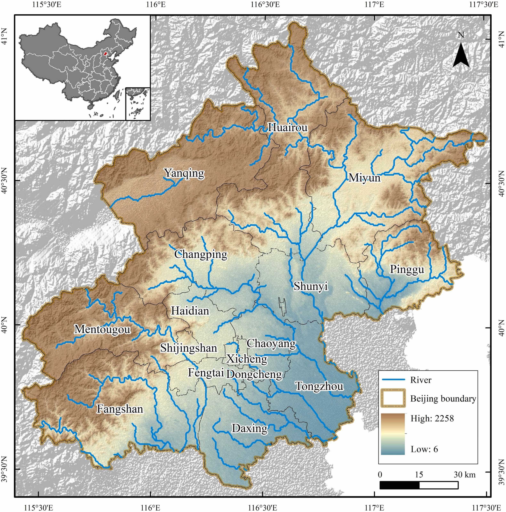
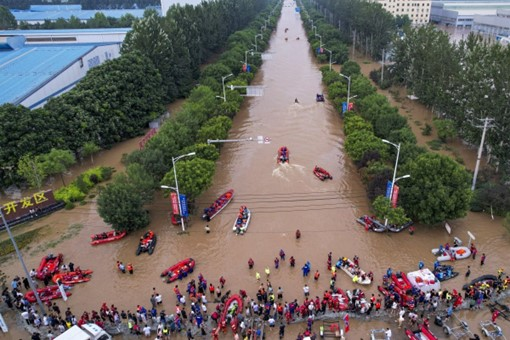

Beijing Flood Management
-Sendai Framework for Disaster Risk Reduction 2015-2030
My city of choice is Beijing, China. Beijing, the capital and economic centre of China, is suffering from the effects of summer flooding. Northern China’s climate is dry for most of the year, which means that in the summer, when southern typhoons travel north, rapid and heavy rainfall soaks the parched land. Prolonged drought, however, can make soil less absorbent, increasing the risk of flash floods(Nie et al. 2017).
Beijing, where rapid urban development resulted in a massive sprawl of concrete infrastructure, that means a lethal concentration of surface that is effectively waterproof by design(Zhang et al. 2023; Ding et al. 2022).Beijing has a monsoon climate with uneven spatial and temporal distribution of precipitation. Floods account for more than 80 per cent of annual precipitation and are concentrated in late July and early August(Dou et al. 2015). The windward slopes in front of the city’s mountains are prone to flash floods, and floods and droughts are frequent(Wang et al. 2024).
Publicly available data from China’s National Meteorological Centre shows how a number of national level weather stations in Beijing and Hebei province received a large portion of their annual average rainfall in the three days from July 29 to Aug. 1.

The figure depicts the hydrography of Beijing, with some hills and low hills distributed in the west and north of the city. When heavy rainfall comes, the large amount of hardened surface in the urban area is not conducive to the infiltration of rainwater, which increases the amount of rainfall runoff, and makes the urban catchment area more prone to flooding.
Based on Sendai Framework for Disaster Risk Reduction 2015-2030
The framework provides comprehensive guidelines for managing disaster risk and reducing the loss of lives, livelihoods, health, and economic, physical, social, cultural and environmental assets of individuals, businesses, communities and nations. To summarise these guidelines in the context of flood disaster management in Beijing
Understanding disaster risk: Recognise all aspects of flood risk, including vulnerability, capacity and exposure of people and assets, and hazard characteristics. This includes promoting the collection, analysis, management and use of relevant data and practical information, and ensuring its dissemination.
Strengthening disaster risk management:Strengthen disaster risk management for effective flood risk management. This requires strategies, clear vision, capacity and guidance within and across sectors, and the involvement of all relevant stakeholders.
Investment in disaster risk reduction: Public and private investments in flood risk prevention and reduction through structural and non-structural measures are essential. These investments build economic, social, health and cultural resilience and contribute to innovation, growth and job creation.

- Strengthening disaster preparedness: Preparing for effective response and “building back better” during the recovery, rehabilitation and reconstruction phases. This includes the development and maintenance of early warning systems, emergency preparedness plans, and the ability to respond and recover effectively from floods.
- Role of stakeholders: While the primary responsibility for disaster risk reduction lies with the State, it needs to be shared with relevant stakeholders. This includes local communities, the private sector and other non-state stakeholders who can provide knowledge, expertise and resources to disaster risk reduction initiatives.
- International co-operation and global partnerships: Emphasis was placed on the need to strengthen international support and partnerships to support national efforts to reduce disaster risk, especially in developing countries such as China. Such support could be in the form of financial resources, technology transfer and capacity building.
4.1 Reflection
The Beijing 2023 floods once again highlighted the importance of remote sensing data in monitoring and managing urban floods. The event provided valuable lessons learned, in particular on how remote sensing can be used to improve flood prevention, response and recovery processes. At the same time, when dealing with geographic issues, we should also take into account relevant international policies, case studies, and scientific planning for urban green spaces, and flood management.
4.2 References
Wang, Z., Li, Z., Wang, Y., Zheng, X., & Deng, X. (2024). Building green infrastructure for mitigating urban flood risk in Beijing, China. Urban Forestry & Urban Greening, 93, 128218-. https://doi.org/10.1016/j.ufug.2024.128218